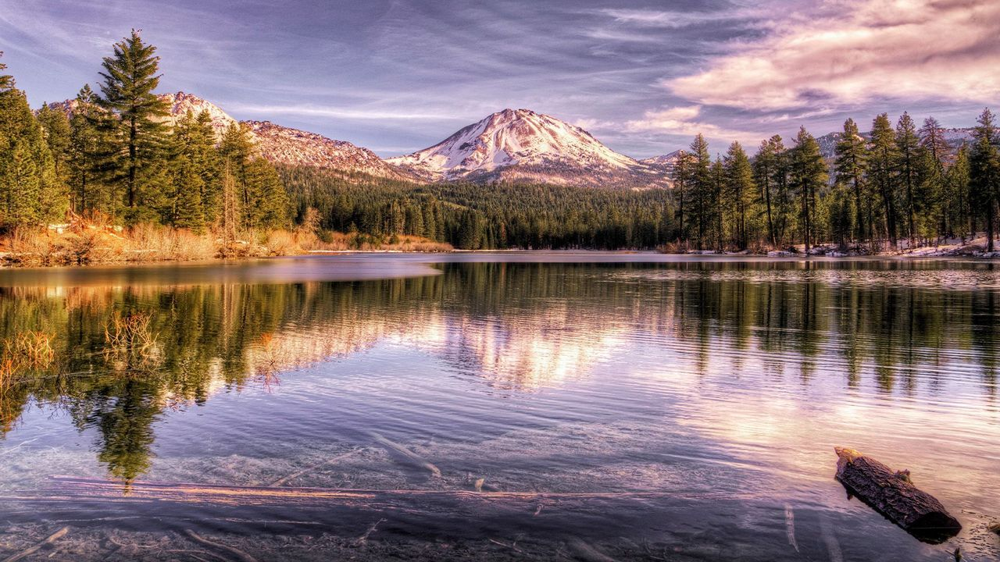
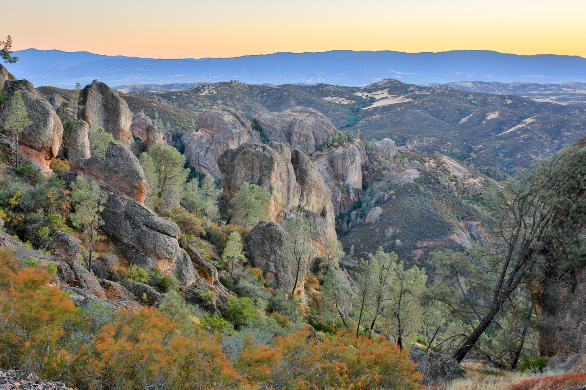
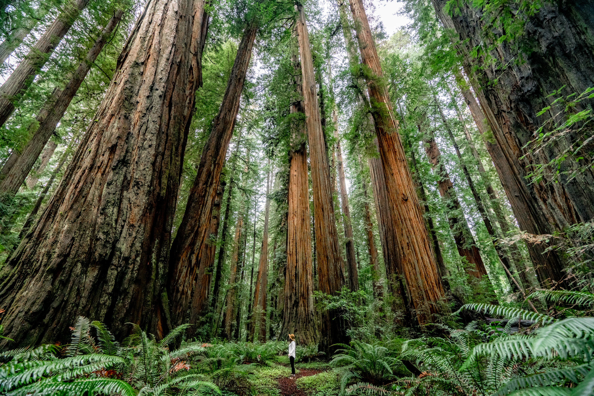
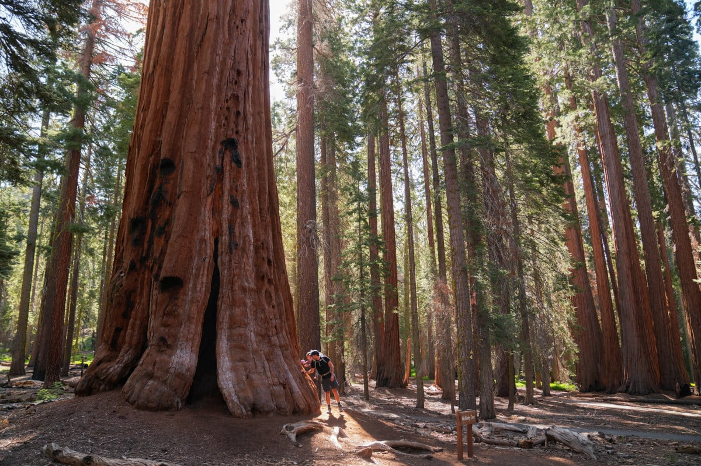

Often called the "Galapagos of North America," this park encompasses five remote, isolated islands off the coast of Southern California. Due to thousands of years of isolation, it features remarkable biodiversity with unique plants and animals found nowhere else on Earth, such as the island fox and island scrub jay. The surrounding marine sanctuary boasts abundant sea life, including seals, sea lions, dolphins, and migrating whales, with vibrant kelp forests perfect for snorkeling and diving.

This is a land of extremes, known as the hottest, driest, and lowest elevation national park in the United States. It features a starkly beautiful, surreal desert landscape with unique geological formations like the Badwater Basin, which is 282 feet below sea level. The park also contains the largest protected wilderness area in the contiguous US, offering a quiet escape with vast salt flats, colorful badlands, and towering sand dunes.

This park is renowned for its namesake, a dynamic and unusual-looking plant called the Joshua tree, and its nearly surreal desert landscapes. It's a popular destination for rock climbing and features a unique intersection of two vast desert ecosystems, the Mojave and the Colorado. The rugged rock formations and stark desert scenery create a unique environment that is particularly famous for its spectacular dark night skies and vibrant sunsets.

Administered jointly with Sequoia National Park, Kings Canyon features one of the deepest canyons in North America, high mountain meadows, and granite peaks rising over 14,000 feet. The park is a haven for backcountry wilderness exploration, known for its swift-flowing rivers and massive stands of giant sequoia trees in areas like the General Grant Grove.

This park is one of the few places in the world where all four types of volcanoes can be found, featuring steaming fumaroles, boiling mud pots, and hot springs that continue to shape the land. Jagged peaks, clear mountain lakes, and wildflower-filled meadows provide a striking backdrop for hiking and exploration in this geologically active area.
California's newest national park, Pinnacles was formed from the remnants of an ancient volcanic field that has eroded into a unique landscape of rocky spires and deep canyons. Located in Central California, the park is a prime location for hiking and rock climbing and serves as a critical protected release site for the endangered California condor, offering visitors a chance to see these magnificent birds in the wild.
Renowned for protecting nearly half of all remaining old-growth coastal redwoods, the tallest trees on Earth, this network of federal and state parks offers landscapes spanning from open prairies to untamed coastline and pristine rivers. The National Park Service and California State Parks work together to manage this precious resource, which has supported human life for thousands of years and is a designated World Heritage Site.
Contiguous and jointly managed with Kings Canyon National Park, Sequoia National Park is celebrated for its immense giant sequoia trees, including the General Sherman Tree, the largest known living tree on Earth by volume. The park is also home to Mount Whitney, the highest peak in the contiguous U.S., and protects vast areas of mountainous wilderness and diverse ecosystems.
A world-renowned shrine to human foresight and the power of nature, Yosemite National Park is instantly recognizable by its iconic granite cliffs, such as El Capitan and Half Dome, and massive waterfalls, including the tallest in North America. Beyond the famous valley, the nearly 1,200 square miles of protected land include vast wilderness areas, ancient giant sequoias, and tranquil subalpine meadows, offering endless opportunities for exploration.